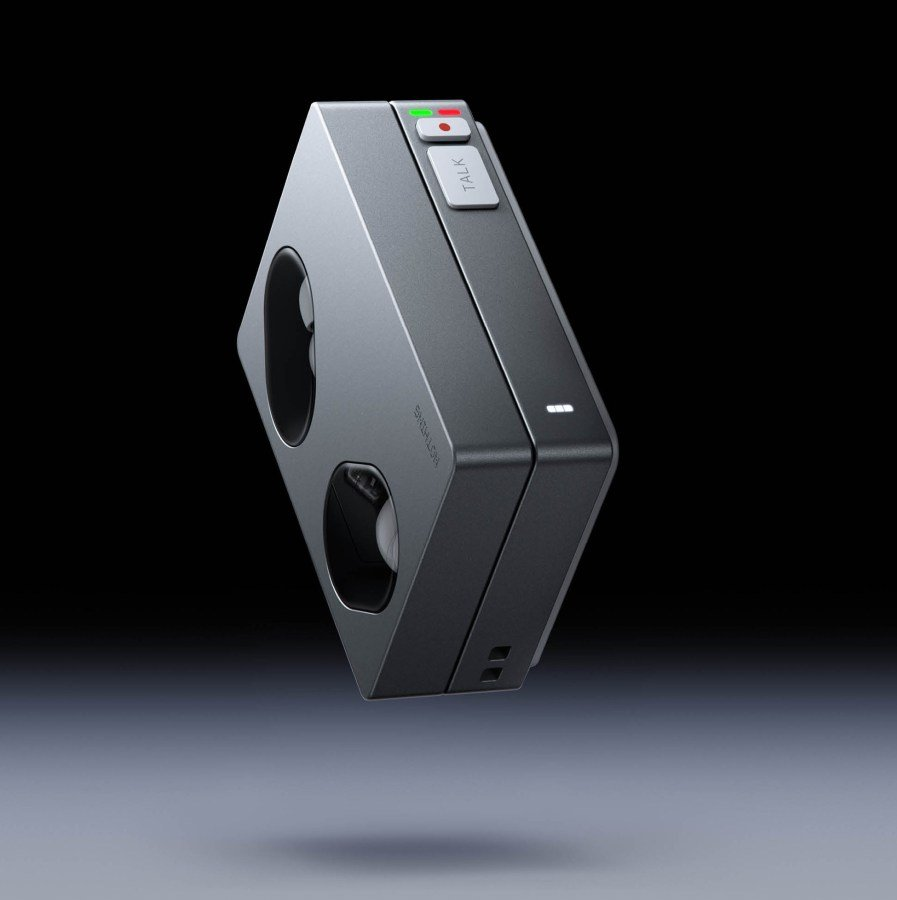

新闻 · 2026-11-26 18:00
Nothing 首款原生 AI 设备 Ear (note) 耳机外观公布，12 月 8 日发布
Nothing公司于11月26日公布其首款原生AI设备Ear (note)耳机外观，定于12月8日发布。该耳机定位为AI记录工具，支持对话、通话、会议及即兴想法的转写摘要，无需额外设备，音质不受AI后台运行影响。充电盒为铝制，透明视窗灵感来自等高线地形图，保留通话键并新增录音键，设计源自复古随身听。

来源与核验
单一信源报道，未交叉核实